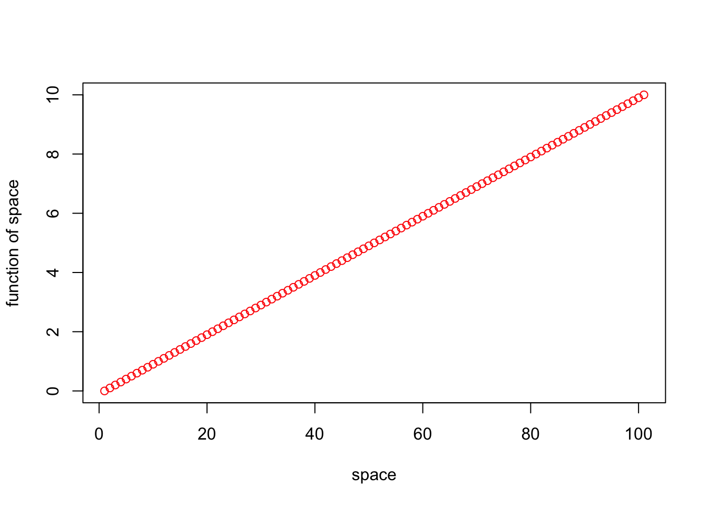
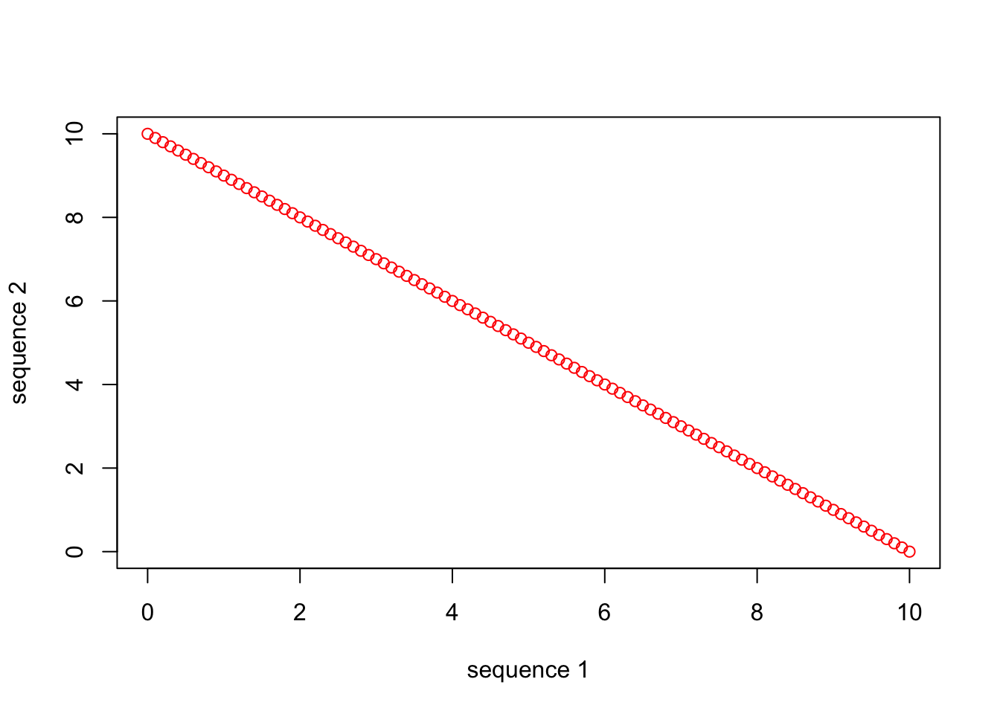
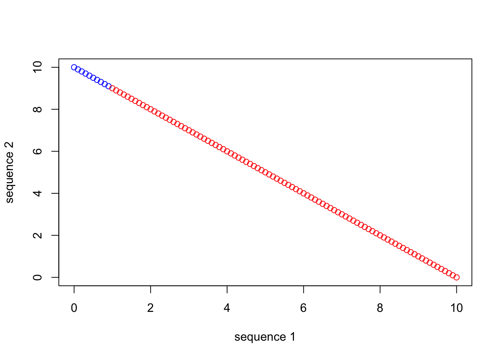
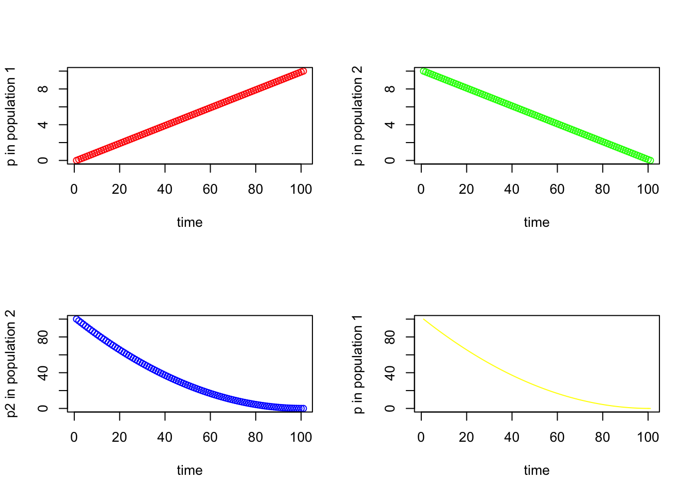
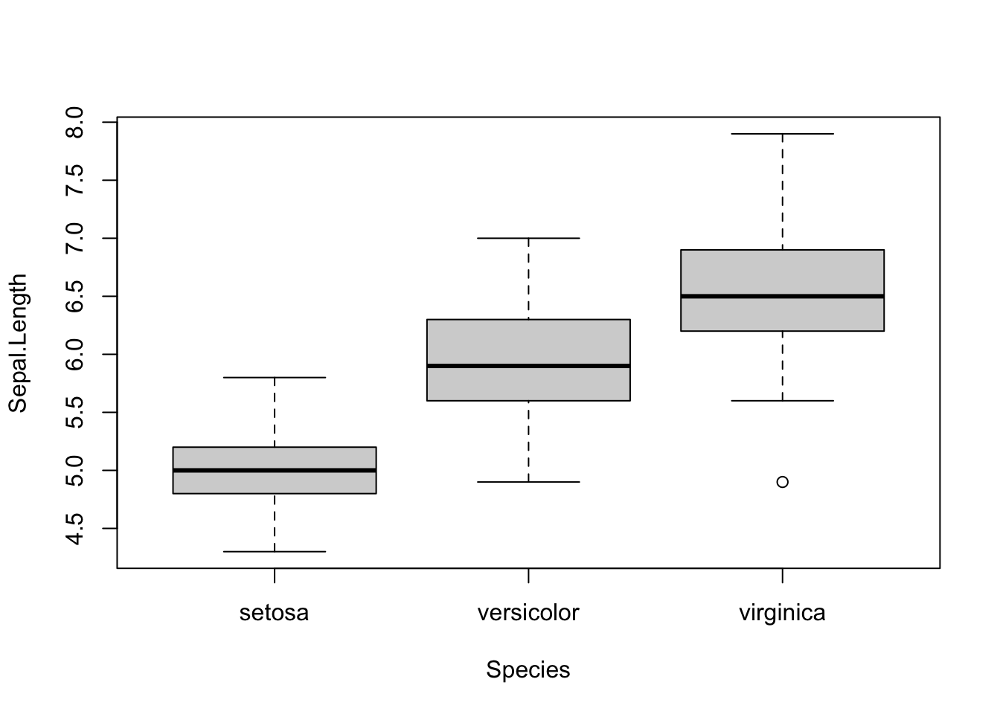
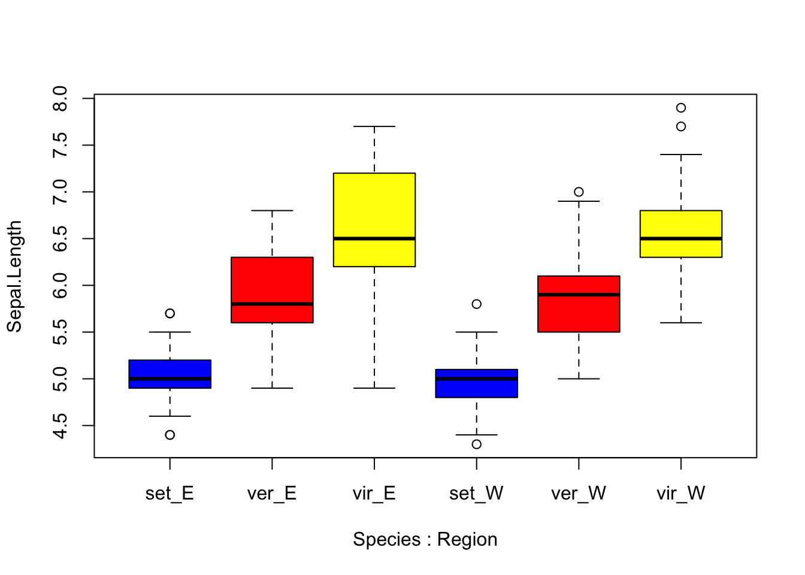

Chapter 6 More R Functions, Complex Objects, Basic Plotting, and RMarkdown
6.1 Background
In this chapter we will cover a variety of topics, all of which will help you build your R programming skills and make you capable of dealing with data sets using R. We will explore additional base R functions that are extremely useful for generating and manipulating vectors, combining vectors into multidimensional R objects, and working with those objects. We will also cover base R plotting functions to get you started with making your own publication-quality plots. Finally, we will touch on the RMarkdown file format, how to write those files in RStudio, and how to render the .Rmd file into polished, readable .html documents.
6.2 More on functions
In the last chapter we touched on functions in R, gave a few examples of commonly used functions, and covered how to learn more about a function using the help() function. As mentioned, functions and their use follow a basic structure. To call functions we type their name and include a set of parameters expressed as arguments, which specify what we want them to do, inside parentheses (). For example, to successfully call the function mean(), we need, at minimum, to supply a vector of numeric values. That vector can be an obect we have already assigned in our environment, or it can be the outcome of another function called within the mean() function. Below are these two alternatives.
z <- c(10, 20, 30)
mean(z)## [1] 20mean(c(10, 20, 30))## [1] 20The second alternative illustrates the power of “nesting” functions within R. You don’t need to perform tasks by defining a bunch of intermediate objects and calling functions in piecemeal manner. In many cases it is much more efficient to nest functions within one another, as long as it doesn’t jeopardize the functionality or readability of your code.
Base R includes dozens of useful functions that will become part of your regular arsenal. We have already mentioned several of these and discussed how to discover and learn more about them. As you become a more advanced R user, and in particular as you begin performing tasks and analyses more specific to your field of study, you will need to use functions that are not included in the base R library. Fortunately, there are thousands of functions distributed in the form of R “packages,” which you can easily install on your system. Packages especially easy to find and use are those distributed via the Comprehensive R Archive Network (CRAN): https://cran.r-project.org/web/packages/index.html. If you find a specific function or set of functions you are interested in trying out, for instance after a Google search of your problem, you can download and install the package those functions belong to by running the following command from your R Console:
install.packages("name_of_package")Note that the name of the package has to be spelled correctly (and R is case sensitive), and that the name of the package should be in quotation marks. You will get a series of messages printed to the Console, and finally either a confirmation of installation or error message. Once you have installed a package successfully, you do not need to re-run the install.packages() function. If you want to check whether a package has already been installed, and look at the details of that installation, you can always run the following from the Console:
installed.packages("name_of_package")To actually use the functions from an installed package, you have to “load” that package into your current working environment. To do that we use the library() function:
library(name_of_package)Note that you do not include quotation marks around the package name for the library() function. Unlike package installation, you will need to invoke library() every time you start a new R session to load the package and its functions.
It is also possible, and quite straightforward, to write your own R functions, which you can define within your .R or .Rmd scripts for convenient usage. If you get the the point at which you want to distribute your own functions in the form of a package, that is possible too. Later during this course we will get a little experience in writing simple R functions. Writing more involved functions and publishing packages, however, are topics for a more advanced R course.
6.2.1 More base R functions useful for working with vectors
Below are annotated lists of base R functions commonly used to work with vectors. We will not take the time here to give specific examples for each function, because their usage is quite straightforward and you will get plenty of practice with them in associated exercies. You can also practice using the help() function if you have specific questions.
The following functions provide information about vectors:
head(): returns the first elements of an object (like a vector or data frame)tail(): returns the last elements of an object (like a vector or data frame)length(): returns the number of elements in a vectorclass(): returns the class of elements in a vector (e.g. “character,” “numeric,” “factor,” etc.)
The following functions can modify or generate vectors in structured ways:
sort(): returns a sorted vector from an orignal vector of numeric valuesseq(): returns a “series” of numeric values beginning at one value and ending at another, while also specifying the size of increments/decrements between valuesrep(): returns a vector of identical elements, repeated a specified number of times
rep(1, 5)## [1] 1 1 1 1 1rep("one", 5)## [1] "one" "one" "one" "one" "one"Note that seq() and rep() can be repeated and/or combined in various ways, in some cases using c(), to generate vectors in a multitude of patterned ways.
The following functions can generate vectors of random values, randomly shuffle vectors, or generate vectors of values drawn from defined probability distributions:
sample(): randomly selects and returns elements from a vector (“shuffles” a vector when size argument is set to original vector size and replace argument is set to “FALSE”)rnorm(): randomly draws values from a theoretical normal distributionrbinom(): randomly draws values from a theoretical binomial distributionset.seed(): setsR’s random number generator seed so that operations with stochastic properties can be reproduced
The following functions can change the class of elements in a particular vector:
as.numeric(): changes the class of objects in a vector to “numeric.”as.factor(): changes the class of objects in a vector to “factor.”as.character(): changes the class of objects in a vector to “character.”
The as.xxx family of R functions is especially useful if you need to convert the class of a particular object for a given function to use the object properly.
6.3 Indexing vectors
Now that we are quite familiar with different ways for generating vectors, let’s discuss how we isolate specific elements from those vectors. This process is called “indexing,” and in R simple numeric (or “positional”) indexing is intuitively based on integers, starting from “1.” We use the square braces for numeric indexing in R: []. For example if we want to index the first element in a vector, we simply type [1] after the vector. Indexing can be performed on a defined vector, or on the fly using the immediate output of a function call.
## Using our vector z from above
z[1]## [1] 10## On the fly using output from the c() function
c(10, 20, 30)[1]## [1] 10To isolate a series of consecutive elements from a vector, we simply use the : character. For example, if we want to index the first (or last) 4 elements from the vector below we could do this, respectively:
c(10, 20, 30, 40, 50, 100, 200)[1:4]## [1] 10 20 30 40c(10, 20, 30, 40, 50, 100, 200)[4:7]## [1] 40 50 100 200For indexing discontinuous elements, we can use our old friend, the c() function inside of the square braces. So, if we want to index the first 3 and the 5th elements:
c(10, 20, 30, 40, 50, 100, 200)[c(1:3, 5)]## [1] 10 20 30 50Finally, we can use the - character to index all elements of a vector, “minus” other elements. When excluding even consecutive elements, however, we have to include c(). For instance, if we want all except the first 2 elements, we could do:
c(10, 20, 30, 40, 50, 100, 200)[-c(1:2)]## [1] 30 40 50 100 2006.4 More complex data objects in R
Vectors are extremely important object types in R, for the reasons and examples we have already discussed. Other types of objects in R are also important, and necessary to learn about to do meaningful and efficient work. These other types of objects are more complex than vectors, but they can, in many cases, be composed of vectors.
6.4.1 Lists
Lists in R are aggregates of different objects, and those objects can be a mixed variety of types. For example, a list could be an aggregate of 3 different vectors, even if those vectors are different lengths and contain elements of a different class. We can generate lists using the list() function.
vec1 <- c(10, 20, 30, 40, 50, 100, 200)
vec2 <- c("happy", "sad", "grumpy")
vec3 <- factor(c("high", "low"))
mylist <- list(vec1, vec2, vec3)
print(mylist)## [[1]]
## [1] 10 20 30 40 50 100 200
##
## [[2]]
## [1] "happy" "sad" "grumpy"
##
## [[3]]
## [1] high low
## Levels: high lowclass(mylist)## [1] "list"str(mylist)## List of 3
## $ : num [1:7] 10 20 30 40 50 100 200
## $ : chr [1:3] "happy" "sad" "grumpy"
## $ : Factor w/ 2 levels "high","low": 1 2Let’s take note of a few things from the output above. First, notice that each of the three vectors in mylist has a numeric (positional) index. Unlike individual vectors, however, primary elements of lists are indexed by double square braces [[]]. So, if we want to index the vec2 element of mylist, we type:
mylist[[2]]## [1] "happy" "sad" "grumpy"Taking it one step further, if we want to index the 2nd element of the vec2 element of mylist, we type:
mylist[[2]][2]## [1] "sad"The other things we should note from our exploration of mylist above is that 1. It has a class when we call the class() function, and 2. We see a nice breakdown of the 3 components that make up mylist when we call the str() function. str(), which is short for “structure,” is an especially useful function for trying to understand the organization of complex objects in R.
6.4.2 Data frames
There is a special class of list we very often work with in R called a “data frame.” You can think of data frames as an especially useful organizing structure for data sets. Data frames are lists of vectors, but the vectors have to be the same length. Also, the vectors (officially known as “columns”) in data frames have names we refer to as “column names,” and the rows also have names. For the types of analysis we will be dealing with in this course, it helps to organize our data so that variables in our study correspond to columns and observations correspond to rows. Let’s explore some practical details regarding the generation and use of data frames.
6.4.2.1 Creating data frames in R
We can generate data frames manually, like we did with the list mylist above. Here, for example, we can set up three variables (habitat, temp and elevation) as vectors.
habitat <- factor(c("mixed", "wet", "wet", "wet", "dry", "dry", "dry","mixed"))
temp <- c(3.4, 3.4, 8.4, 3, 5.6, 8.1, 8.3, 4.5)
elevation <- c(0, 9.2, 3.8, 5, 5.6, 4.1, 7.1, 5.3)Then we can use the data.frame() function to incorporate the vectors into columns of the data frame.
mydata <- data.frame(habitat, temp, elevation)
row.names(mydata) <- c("Reedy Lake", "Pearcadale", "Warneet", "Cranbourne",
"Lysterfield", "Red Hill", "Devilbend", "Olinda")Note above that we used a function called row.names to assign row names to mydata. The function colnames() does the same, but for column names.
6.4.2.2 Working with pre-loaded base R data frames.
There are a few data frames that are available to work with whenever you begin an R session. These can be a great way to practice plotting and analysis, and in fact many examples written to accompany R functions include these data frames to promote reproducibility and convenience. Two of these pre-loaded data frames that are especially popular are mtcars and iris.
head(mtcars)## mpg cyl disp hp drat wt qsec vs am gear carb
## Mazda RX4 21.0 6 160 110 3.90 2.620 16.46 0 1 4 4
## Mazda RX4 Wag 21.0 6 160 110 3.90 2.875 17.02 0 1 4 4
## Datsun 710 22.8 4 108 93 3.85 2.320 18.61 1 1 4 1
## Hornet 4 Drive 21.4 6 258 110 3.08 3.215 19.44 1 0 3 1
## Hornet Sportabout 18.7 8 360 175 3.15 3.440 17.02 0 0 3 2
## Valiant 18.1 6 225 105 2.76 3.460 20.22 1 0 3 1head(iris)## Sepal.Length Sepal.Width Petal.Length Petal.Width Species
## 1 5.1 3.5 1.4 0.2 setosa
## 2 4.9 3.0 1.4 0.2 setosa
## 3 4.7 3.2 1.3 0.2 setosa
## 4 4.6 3.1 1.5 0.2 setosa
## 5 5.0 3.6 1.4 0.2 setosa
## 6 5.4 3.9 1.7 0.4 setosa6.4.2.3 Reading in data frames in R
A strength of R is being able to import data from an external source. For example, if you have a comma- or tab- separated text file (like the UNIX-friendly formats we discussed previously), it can be easily read into R, by default as a data frame. One function for accomplishing this is read.table(), although functions like read.delim() can be similarly applied. Two important arguments for read.table() are “header” and “row.names,” which indicate that there is a header row (with column names) and row label column (with row names), respectively. You also need to supply the file path and name in quotation marks (no path necessary if the file is in the current working directory), and what character is used as the field (column) delimiter. Here is an example:
YourFile <- read.table('yourfile.csv', header=T, row.names=1, sep=',')
YourFile <- read.table('yourfile.txt', header=T, row.names=1, sep='\t')6.4.2.4 Exporting data frames in R
If you ever want to save a data frame in a format that you can work with outside of R, the write.table() function does pretty much the opposite of its “read” counterpart.
write.table(YourFile, "yourfile.csv", quote=F, row.names=T, sep=",")
write.table(YourFile, "yourfile.txt", quote=F, row.names=T, sep="\t")6.4.2.5 Indexing data frames
Indexing data frames can be acheived in two different ways. We can use numeric (positional) indexing as in the case of vectors and lists (see above). With a data frame, we can index any subset of it using two pieces of information: row coordinates and column coordinates. To accomplish this we use single square braces [,], in which the row coordinate(s) are typed first, followed by a comma, followed by the column cooridate(s). If we want to index all rows or all columns, we just leave the space to the left or right of the comma blank, respectively. Here are some examples for indexing subsets of the iris data frame.
## The first row, with all columns
iris[1,]## Sepal.Length Sepal.Width Petal.Length Petal.Width Species
## 1 5.1 3.5 1.4 0.2 setosa## The first 5 rows and the first 2 columns
iris[1:5,1:2]## Sepal.Length Sepal.Width
## 1 5.1 3.5
## 2 4.9 3.0
## 3 4.7 3.2
## 4 4.6 3.1
## 5 5.0 3.6With data frames, we can also use the column names to index subsets. To do this we use the $ character after the name of the data frame, followed by the name of the column we want to index. Again, below is a demonstration using iris. Indexing using column names is perhaps the most useful when defining statistical models, a topic we will reach later in the course.
## The first 5 rows of the first column
iris$Sepal.Length[1:5]## [1] 5.1 4.9 4.7 4.6 5.06.4.3 Matrices
Matrices in R are somewhat similar to data frames, but mixed classes among columns are not permitted, and rows and columns are only positionally indexed as opposed to having names. Positional indexing for matrices, not surprisingly, follows the [rownumber, columnnumber] convention, similar to data frames. A matrix can be generated using the matrix() function, as demonstrated below.
## Populate a 3x3 matrix with values 1 to 9
matrix(1:9, nrow=3, ncol=3)## [,1] [,2] [,3]
## [1,] 1 4 7
## [2,] 2 5 8
## [3,] 3 6 96.4.4 A few additional base R functions for working with complex R objects
To add to your foundational knowledge of R functions, below are a few more functions especially useful for working with objects like data frames and matrices.
dim(): returns the number of rows and columns of a data frame or matrixView(): opens up a GUI “viewer” for visual inspection of data frames (not recommended for large data frames)cbind(): combines columns into a single object, which can be used to define or build data frames or matricesrbind(): combines rows into a single object, which can be used to define or build data frames or matricest(): transposes a data frame or matrix, such that rows become columns, and columns become rows
6.5 Some brief notes on basic programming in R
At some point during your development as an R user you will want to programmatically manipulate R objects in an iterative, repeatable manner to automate tasks like plotting, simulations, and analysis. This use of the R language is especially relevant if you want to write your own functions. Here we touch on a few tools and approaches that will open the door to more powerful programming in R. These are skills that are great to practice and learn, but at a fairly foundational level for now. More advanced programming training in R is beyond the scope of this course.
6.5.1 conditional statements with ifelse()
One fundamental structural component of computer programming languages is the idea of conditional statements, which often take the form of “if/else” evaluation and execution. The idea is that we can write an algorithm to evaluate a particular statement using a logical operator, and if that statement is true have the program do one thing, but if the statement is false, have it do somehting “else.” In R we can write these statements with a structure similar to other languages, but we can also use the single R function ifelse() to accomplish the same thing. The ifelse() function is very easy to use. The first argument is the logical evaluation, the second argument is the action to take if that statement is true, and the third argument is the action to take if false. It is also possible to nest multiple ifelse() function calls wihtin one another, if mulitiple evaluations need to be performed with different outcomes. Below is a simple example for using ifelse() to generate a vector of values (“colors”), based on another vector.
## First define a character vector
char_vec <- c(rep("treatment",5), rep("control",3), rep("treatment", 4), rep("control", 6))
print(char_vec)## [1] "treatment" "treatment" "treatment" "treatment" "treatment" "control"
## [7] "control" "control" "treatment" "treatment" "treatment" "treatment"
## [13] "control" "control" "control" "control" "control" "control"## Generate a vector that stores the color "red" for "treatment" and "blue" for "control"
col_vec <- ifelse(char_vec=="treatment", "red", "blue")
print(col_vec)## [1] "red" "red" "red" "red" "red" "blue" "blue" "blue" "red" "red"
## [11] "red" "red" "blue" "blue" "blue" "blue" "blue" "blue"6.6 The Split-Apply-Combine approach to data analysis
It can often feel like the specific tools and strategies required for data analysis are unique to any given combination of question and data. However, one motif does appear time and time again: the need to take a larger data set, summarize a key variable by one or more grouping variables, and return the result as a new, more directly useful data object. This work flow is often called the ‘Split-Apply-Combine’ approach to data analysis. You first (1) Split your data by some grouping variables of interest e.g. treatment, (2) Apply a function to another variable for each group separately e.g. the mean of some response variable, and (3) Combine the output into a new data object e.g. a named vector or data frame. Because this approach is so common, R has many ready-made functions and packages to make this as easy as possible.
6.6.1 replicate(), apply(), tapply(), and aggregate()
In some cases we want to repeat a given process over and over again. For example, maybe we want to simulate the sampling process and generate 100 random samples of 100 values from a normal distribution. Fortunately, the R function replicate() makes this very easy.
In the example below, we “shuffle” the order of the integers 1 through 10 five times using replicate():
replicate(5, sample(1:10, size=10, replace=FALSE))## [,1] [,2] [,3] [,4] [,5]
## [1,] 7 8 4 5 7
## [2,] 8 4 6 9 6
## [3,] 2 9 10 1 9
## [4,] 4 10 5 3 8
## [5,] 10 2 2 4 4
## [6,] 5 6 1 8 1
## [7,] 9 1 7 2 3
## [8,] 6 5 8 10 2
## [9,] 1 7 3 6 10
## [10,] 3 3 9 7 5Note that the first argument is the number of total iterations we want to reproduce, and that the function returns a matrix as output.
The replicate() function belongs to a group of functions referred to informally as the “apply” family. Another, similar function from this family is simply called apply(), and it can be used to apply a function to either all rows (with the MARGIN argument set to 1) or all columns (with the MARGIN argument set to 2) in a data frame or matrix. This is especially useful for calculating summary statistics for what we call the “margins” of data in tables.
You might be starting to see how this family of functions could emulate the S-A-C approach to data analysis. A very useful function from this group is tapply(), which allows you to apply a function to one vector (for example a numeric vector in a data frame), in a group-wise manner based on one or more factor vectors that correspond to the numeric vector. In other words, if we want to find the maximum value of variable x for each level of factor y in a data frame, we could use tapply() to do so. Below is an example, again using the iris data frame.
## Find the maximum petal length for each species in the iris data frame
tapply(iris$Petal.Length, iris$Species, max)## setosa versicolor virginica
## 1.9 5.1 6.9Note that the first argument is the numerical column, and the second is a factor column. The third is the function we wish to apply, in this case to each species separately.
One problem with tapply() is that it only allows you to apply a function to a single variable of interest. What if you would like to summarize all relevant variables based on one or more factors? For that, we can use aggregate(). For example, we could collapse the entire iris data frame by finding the average of each numeric column by species.
## Find the mean of each variable for each species in the iris data frame
aggregate(iris, by = list(iris$Species), FUN = mean)## Group.1 Sepal.Length Sepal.Width Petal.Length Petal.Width Species
## 1 setosa 5.006 3.428 1.462 0.246 NA
## 2 versicolor 5.936 2.770 4.260 1.326 NA
## 3 virginica 6.588 2.974 5.552 2.026 NAMuch like tapply(), the first argument is the data we wish to summarize, the second argument is the grouping variable (which must be passed as a list), and the third argument is our function. Note that in this case, we end up with a pointless Species column, as the aggregate() function attempts to apply a function to every variable, including the grouping variable, producing a column of NAs in this case. aggregate() is a highly flexible function - you can choose to select only a subset of data to summarize, specify multiple grouping variables, and aggregate your data using formula notation as well (a topic that will be covered later in this book).
6.6.2 For loops in R
Another fundamental concept in computer programming is the “for loop,” which is an algorithmic strategy for iteratively performing a task according to a pre-defined counter or loop variable, then terminating when the “loop” is evaluated as complete. For example, we may want to perform a specific calculation again and again for successive elements of an R object (like a data frame), and build a vector that successively stores the calculation for each iteration of the “loop.” We will not devote much time to for loops in R here, because a lot of looping functionality is accessible in R without ever needing to specify a loop. For example, the “apply” group of functions accomplish many of the tasks you would otherwise write a for loop to perform. Additionally, remember that R is a vectorized programming language, meaning that many basic operations, like addition or multiplication, are automatically performed iteratively to each element in vectors. Whenever you are considering writing a for loop, carefully consider whether there is a much faster alternative.
However, the commented example below illustrates an application in which a for loop is warranted. Note that we “pre-allocate” output vectors by creating an empty data frame to store the results. This maximizes for loop speed by circumventing the need to re-write objects as we iteratively add elements.
## Calculate mpg/cyl and mpg/wt, for every row in mtcars and if the second is at least twice the size of the first include that ratio and another character value "Yes" in a growing 2-column dataframe. If the ratio is less than 2, then include "No" in the second column.
## first pre-allocate our new data frame, which contains NAs initially
newdf <- data.frame(rep(NA, length(mtcars$mpg)), rep(NA, length(mtcars$mpg)))
## then write the for loop to do the above task for every row in mtcars
for(i in 1:length(mtcars$mpg)) {
newdf[i,1] <- (mtcars$mpg[i]/mtcars$wt[i])/(mtcars$mpg[i]/mtcars$cyl[i])
newdf[i,2] <- ifelse(newdf[i,1]>=2, "Yes", "No")
}
print(newdf)## rep.NA..length.mtcars.mpg.. rep.NA..length.mtcars.mpg...1
## 1 2.290076 Yes
## 2 2.086957 Yes
## 3 1.724138 No
## 4 1.866252 No
## 5 2.325581 Yes
## 6 1.734104 No
## 7 2.240896 Yes
## 8 1.253918 No
## 9 1.269841 No
## 10 1.744186 No
## 11 1.744186 No
## 12 1.965602 No
## 13 2.144772 Yes
## 14 2.116402 Yes
## 15 1.523810 No
## 16 1.474926 No
## 17 1.496726 No
## 18 1.818182 No
## 19 2.476780 Yes
## 20 2.179837 Yes
## 21 1.622718 No
## 22 2.272727 Yes
## 23 2.328967 Yes
## 24 2.083333 Yes
## 25 2.080624 Yes
## 26 2.067183 Yes
## 27 1.869159 No
## 28 2.643754 Yes
## 29 2.523659 Yes
## 30 2.166065 Yes
## 31 2.240896 Yes
## 32 1.438849 NoIn the case above, we used the length of the mtcars data frame (number of rows) to build a pre-allocated (filled with NAs) data frame of the correct size. Then, we also used the values 1 through that length to set up our “counter” in the for loop. The loop stops after tasks have been completed for i=32, which corresponds to the final row in mtcars. As mentioned, it’s probably better to rely on the other convenient R functions above for iterative processes, but pre-allocation of output objects is the way to go if you do need to rely on a for loop.
6.7 Fundamentals of plotting in R
The world of plotting in R is incredibly diverse, and there are entire courses dedicated to data visualization using R. Here we will very briefly cover a few of the most useful plotting functions and strategies using base R. This should be enough of an introduction to get you jump started, but you will no doubt discover more appealing and finely tuned strategies to apply in your future as an R user. For example, some people will find that the highly flexible, customizable package ggplot2 and its plotting functions are preferable over base R. I encourage you to explore tools like this on your own, once you feel comfortable with R in general. We will also introduce plot- and visualization-related lessons throughout the remainder of the course, as they pertain to the analysis topic at hand.
6.7.1 Basic plotting with plot()
One “high level” plotting function in base R is simply called plot(). This function can accomplish many, many plotting goals, so we will start with it. Below, we start by calling plot() on a single vector that we have generated. Spend a little time examining the code, and the arguments passed to plot() in this example.
seq_1 <- seq(0.0, 10.0, by = 0.1)
plot(seq_1, xlab="space", ylab ="function of space", type = "p", col = "red")
We only supplied the one vector (seq_1) to plot() in this case, which resulted in the function just defining the x-axis values as the numeric positions (1 to 101) of seq_1. Also, this style of plot is known as a “scatterplot.” There is usually more “scatter,” for example when plotting two variables that not perfectly related. With plot(), we usually want to examine the relationship between two different variables, like below:
seq_1 <- seq(0.0, 10.0, by = 0.1)
seq_2 <- seq(10.0, 0.0, by = -0.1)
plot(seq_1, seq_2, xlab="sequence 1", ylab ="sequence 2", type = "p", col = "red")
In this example, plot() takes the first argument as the x-axis variable, and the second argument as the y-axis variable. You can also use the ~ to specify variables, but in this case the y-axis variable comes first (y ~ x). Also note the other arguments, which are usually named pretty intuitively. Note the axis label arguments, the type of object plotted (“p” stands for “points”), and the color of the plotted objects. There are many possible arguments, and many are actually set by another function called par(), that plot() calls on internally. One great resource for understanding plotting function arguments is the help menu for par(). I promise, if you become familiar with the par() documentation, you will quickly ascend the ranks of plotting prowess, and it will save you many frustrating moments in the future! I encourage you to study the plot() and par() documentation and practice using some of the other arguments that are especially useful, including “main,” “xlim,” “ylim,” and “cex,” for example.
The nice thing about graphical parameters is that, like many things in R, they are vectorized. So, if we want to use different symbols (look into the “pch” argument), colors (“col”), or sizes (look at “cex”) of points for different observations in something like a data frame, we can supply those in the form of a vector! Taking the example above, if we want to plot the first 10 observations as blue, and the remaining observations as red, we can supply a vector of “blues” and “reds” in the appropriate order to plot().
seq_1 <- seq(0.0, 10.0, by = 0.1)
seq_2 <- seq(10.0, 0.0, by = -0.1)
plot(seq_1, seq_2, xlab="sequence 1", ylab ="sequence 2", type = "p",
col = c(rep("blue", 10), rep("red", 91)))
You can see how this would be a nice way to differentiate among observation types in your data set, and produce an information-rich, single plot, as opposed to producing many plots that highlight single variables.
Sometimes we want to include multiple plots, as different panels, in the same figure. Fortunately this is made easy by the mfrow argument within par(). You simply set the dimensions, denoted by number of rows and number of columns in parentheses, before calling plot() repeatedly.
seq_square <- (seq_2)*(seq_2)
seq_square_new <- (seq_2)^2
par(mfrow=c(2,2))
plot (seq_1, xlab="time", ylab ="p in population 1", type = "p", col = 'red')
plot (seq_2, xlab="time", ylab ="p in population 2", type = "p", col = 'green')
plot (seq_square, xlab="time", ylab ="p2 in population 2", type = "p", col = 'blue')
plot (seq_square_new, xlab="time", ylab ="p in population 1", type = "l", col = 'yellow')
6.7.2 Histograms using hist()
We will talk more about frequency distributions and histograms later in the course, but for now it is a good idea to become familiar with one way to plot them. If we have a quantitative variable, like height, and we want to know what the distribution among individuals looks like, we can use a histogram. The function hist() will help us with this task. To illustrate, below we will sample values from a binomial distribution. Don’t worry about what this means now, as we will return to it later, but the scenario is intuitive. Let’s say we flip a coin 20 times and record the number of “heads” as “successes,” and let’s further say that we perform this “20 coin flips” activity 1000 times. And let’s assume that our coin is “fair,” such that the probability of getting heads on any given flip is 0.5. We can simulate this process using the rbinom() function and plot the results using hist().
hist(rbinom(n=1000, size=20, prob=0.5), xlab="number of heads", ylab="number of activities",
main="Freq. Dist. of Coin Flip Successes")
Note that, as expected, our most frequent observation is that we get 10 heads out of 20 flips.
6.7.3 Boxplots using boxplot()
In many cases we want to summarize the distribution of a qunatitiative variable using “quartiles” (we’ll cover these in depth later), and perhaps we want to do this separately for different observation types in our data set. A boxplot (or “box and whisker plot,” depending on how it is drawn), depicts the 1st, 2nd (median), and 3rd quartile for a vector of numeric values using a box. “Whiskers” are often added to define “fences” beyond which are putative “outliers.” The boxplot() function of base R is convenient to use, particularly when your data set is organized in a data frame. Below is a series of simple examples to illustrate the utility of boxplot()
## make a modified version of the iris data frame, which includes a "Region" factor
new_iris <- iris
new_iris$Region <- as.factor(rep(c(rep("West", 5), rep("East", 5)), 15))
## make a boxplot of Sepal.Length that plots individual boxes for the separate Species
boxplot(Sepal.Length ~ Species, data=new_iris)
## make a boxplot of Sepal.Length that shows all 6 combinations of factor levels from Species and Region, including a different color for each species
boxplot(Sepal.Length ~ Species*Region, col=c("blue", "red", "yellow", "blue", "red", "yellow"),
data=new_iris, names=c("set_E","ver_E","vir_E","set_W","ver_W","vir_W"))
Above you can see that by using the * character between the factors “Species” and “Region in our plotting”formula" boxplot() produces a box for each factor level combination. Also, for boxplot() note that the “col” argument refers to the boxes themselves, so if we supply a vector of 6 colors, those will be applied to the boxes in order from left to right. Speaking of colors, an almost limitless array of colors can be specified in R plotting functions. Furthermore, colors can be coded using their names, or hexadecimal RGB specification. For a thorough treatment and great resources regarding colors in R, I recommend visiting the links at the bottom of the chapter.
6.8 A brief introduction to RMarkdown
RMarkdown is a language that is distinct from R, but that incorporates R code “chunks,” which can be displayed and run if desired in the final, knitted output. The output can be knitted to a variety of file formats, such as .html, .pdf, or even Microsoft Word. For this course we will get into the habit of knitting to .html, which is the least buggy and error-prone in my experience. In the short section below, we will go over the simple steps required to write and knit your first .Rmd file, including the basic style elements of the language and some essential R chunk settings.
To get started using RMarkdown, you first need to make sure that you install the package rmarkdown from your Console, using install.packages(). Then, assuming you have an RStudio session running, click on File -> New File -> R Markdown. This will open a window in which you will type the name of your new file and the author’s (your) name. A new file in your RStudio script editor pane (the upper left one) should appear. There will be a templated header, along with some other templated code, which you can modify based on your preferences. You may want to get rid of the pdf output line at the top for now, as we will knit to .html for this course. Knitting to .pdf requires some addtional software installation, which we don’t have time to troubleshoot during this course. In any case, let’s now cover some basic formatting code and code “chunk” types.
Below I will provide the code you would type in your own RMarkdown file, followed by what it looks like rendered in this Bookdown document, which is built using a collection of RMarkdown files itself!
6.8.1 RMarkdown formatting basics
You can include “nested” headers (like the one directly above) by using # symbols. For example this:
## Experiment with headers
### Try a third-level header
#### Or a fourth-level headerRenders as this:
6.9 Experiment with headers
6.9.1 Try a third-level header
6.9.1.1 Or a fourth-level header
Text can be rendered in bold, italics, or both like this:
Text can easilly be *italicized* or **bolded** or ***both***Which renders as this:
Text can easilly be italicized or bolded or both
Links can be included like this:
Here is a useful link: [Rmd intro by RStudio](https://rmarkdown.rstudio.com/articles_intro.html)
Here is another: [R Markdown cheat sheet](https://rmarkdown.rstudio.com/lesson-15.html)Which render like this:
Here is a useful link: Rmd intro by RStudio
Here is another: R Markdown cheat sheet
For many more details on RMarkdown format and coding, I highly recommend the above links.
6.9.2 RMarkdown code chunk options
Code chunks in RMarkdown exist to show R code, run the code, or both. In every RMarkdown file you write, you will demarcate code chunks with three “ticks” at the top of the chuck followed immediately by the chunk options in curly braces, on the same line, and another three ticks (on their own line) below the chunk of code. This is what a coded chunk looks like:
```{r, eval = TRUE, echo = TRUE}
seq(1, 10, 1)
```Which renders like this:
seq(1, 10, 1)## [1] 1 2 3 4 5 6 7 8 9 10Note that in the above example the R code will be both run (“evaluated”) and displayed (“echoed”) in the knitted .html file. If we want to suppress either or both of those from being rendered, we just set the chunk options to “FALSE.”
When your RMarkdown file is completed, save any final changes, and click on the “Knit” icon in the toolbar, or click File -> Knit Document. Assuming there are no errors in your code, the rendered .html file should load in a new window for inspection, and the file should be saved in the same location as your .Rmd file. This has been a minimal treatment of RMarkdown, but it should be enough guidance to get you started writing your own RMarkdown scripts. Please consult the aforementioned RMarkdown resources for additional instruction, examples, and help.
6.10 Exercises associated with this chapter:
- Exercise 2 (
rtutorial_1infoundstatsR package) - Exercise 3 (
rtutorial_2infoundstatsR package)
6.11 Additional learning resources:
Logan, M. 2010. Biostatistical Design and Analysis Using R. - A great intro to R for statistical analysis
http://library.open.oregonstate.edu/computationalbiology/ - O’Neil, S.T. 2017. A Primer for Computational Biology
http://www.stat.columbia.edu/~tzheng/files/Rcolor.pdf - A nice
.pdfmenu for manyRcolorshttps://www.stat.ubc.ca/~jenny/STAT545A/block14_colors.html - A good introduction to colors in
Rhttps://medialab.github.io/iwanthue/ - A cool automated color palette selection tool
https://rmarkdown.rstudio.com/articles_intro.html -
RStudioguide toRMarkdownhttps://rmarkdown.rstudio.com/lesson-15.html -
RMarkdown“cheat sheet”